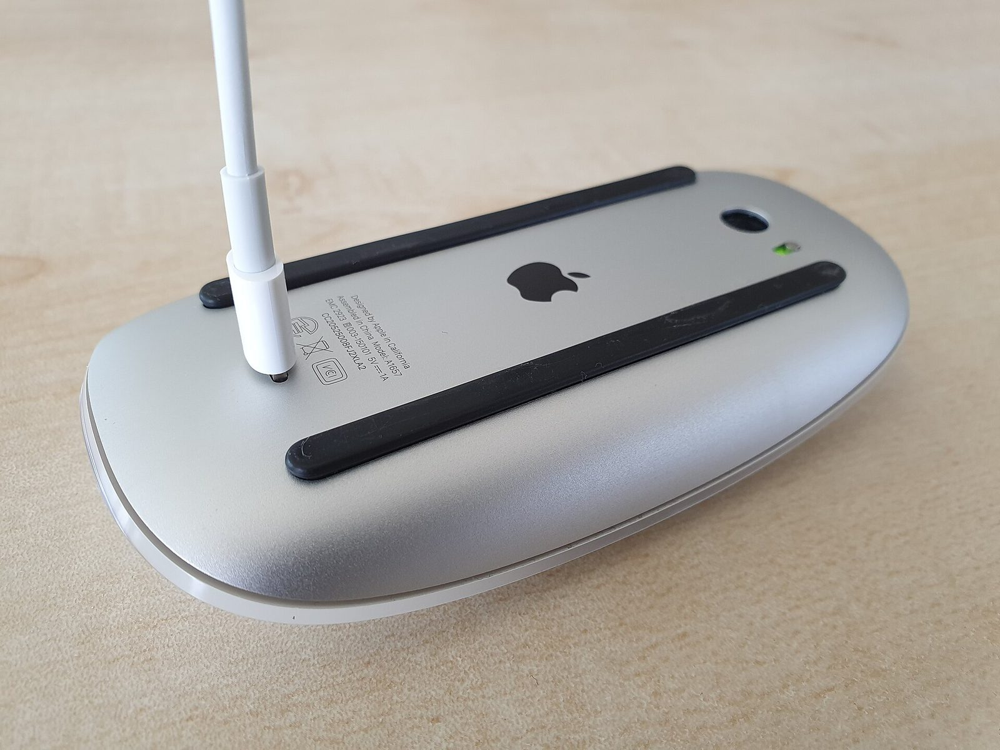
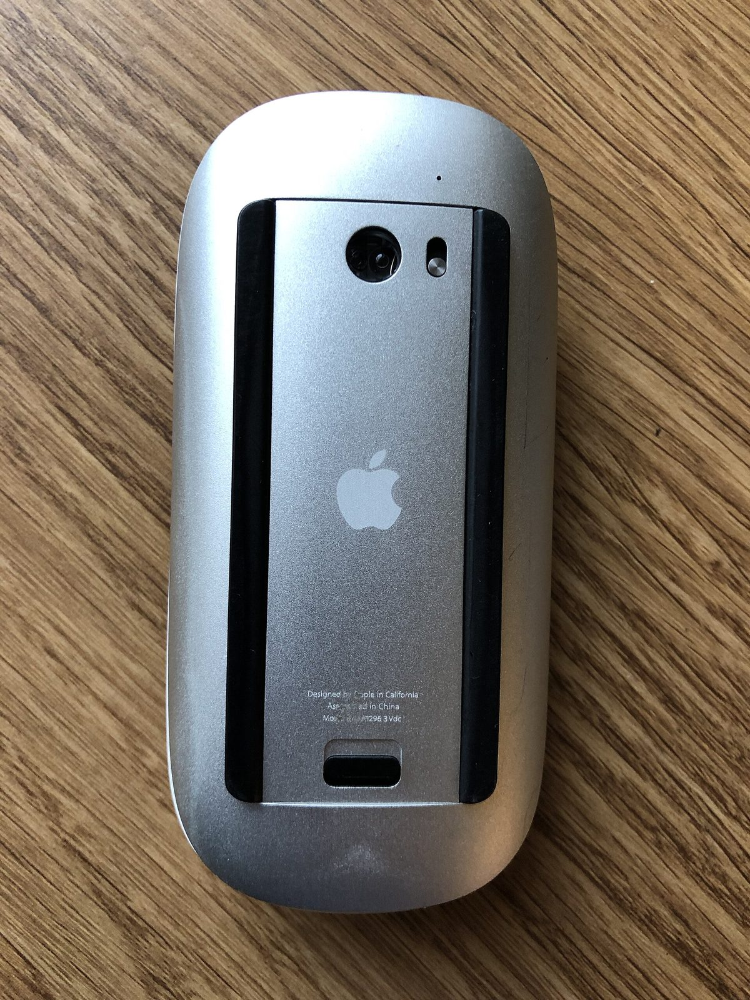

Battery % · report 0x90 · COL02
Magic Mouse battery percentage on Windows 11
This driver does not read battery. The free Magic Tray app does it in userspace: on the 2024 mouse it briefly flips Mode A to Mode B, reads Input report 0x90, then flips the device back.
 Live screenshot
Live screenshot
Neither driver reports battery. The Apple-driver route you install restores scroll only, and the unfinished KMDF driver has no battery path yet. For the general story — which Apple devices report a percent, and what to do when none shows — see battery on Windows.
Which Magic Mouse has a characterised battery report?
Only the 2024 model. Magic Tray reads Input report 0x90 on collection COL02 of PID 0x0323. v1, v2 and v2-alt use a different HID descriptor structure, so that collection has not been mapped on them (issue 22); this site claims nothing either way. Scroll is supported on all four PIDs.



Why the scroll driver matters for a battery read
The charge arrives on a HID collection, and this mouse can lose its collections. When a Bluetooth idle disconnect collapses them — Mode A to Mode B — the collection carrying report 0x90 goes down with scroll, so the percent goes stale or stops. Keeping the shipped filter healthy protects both.
Scroll not working
The cause and its limits.
Install the driver
Steps and rollback.
HID research notes
Collection layout detail.
Common questions
Why does Windows 11 not show the level itself?
The paths Windows normally uses are not dependable for this mouse: Windows Settings and WMI are not reliable sources for Magic Mouse 2024 battery state. The number arrives in an Input report on a specific collection, so something has to listen on that collection and decode it. That is what Magic Tray does, in userspace.
Does the KMDF route show battery?
No. The KMDF driver is unfinished — development notes only, with no compiled .sys, signed package or installer — so there is no battery path to document for it. Nothing about it is installable yet.
Protocol detail: report 0x90, COL02, and what is not the source
The 2024 Magic Mouse (PID 0x0323) sends its charge state on HID Input report 0x90, on the collection referred to here as COL02. Magic Tray listens on that collection and decodes the report; it is not a kernel driver and does not modify the device.
Feature report 0x47 is not the battery source, despite looking like a plausible candidate in the descriptor — do not decode it as charge level. Windows Settings and WMI are not reliable battery sources for this mouse either. Full notes: HID research notes, including Input report 0x90.